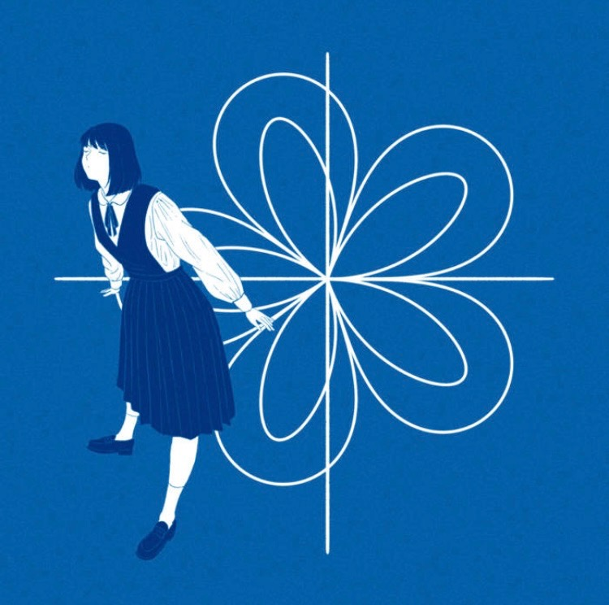
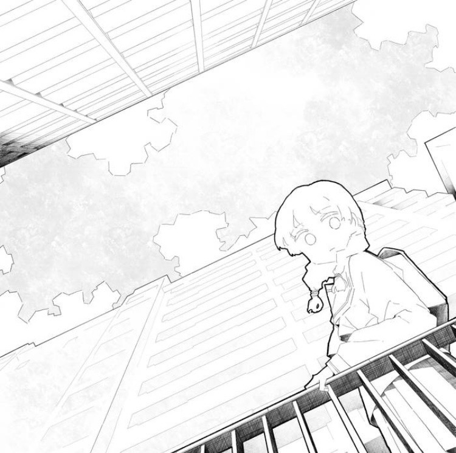
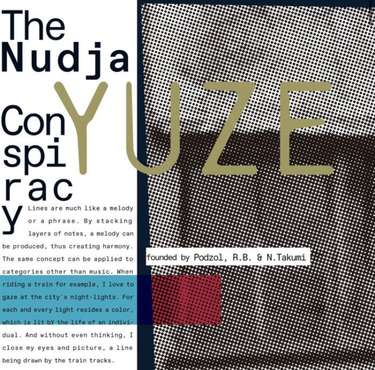
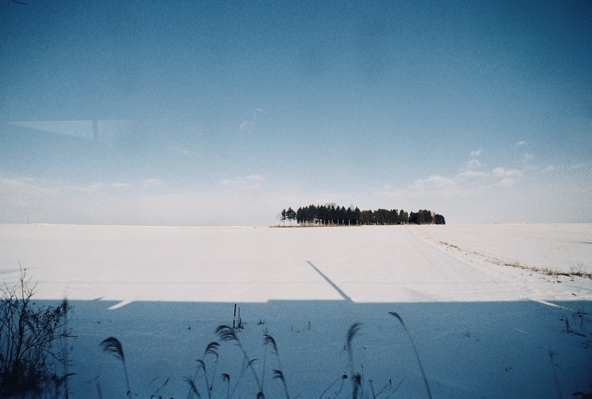
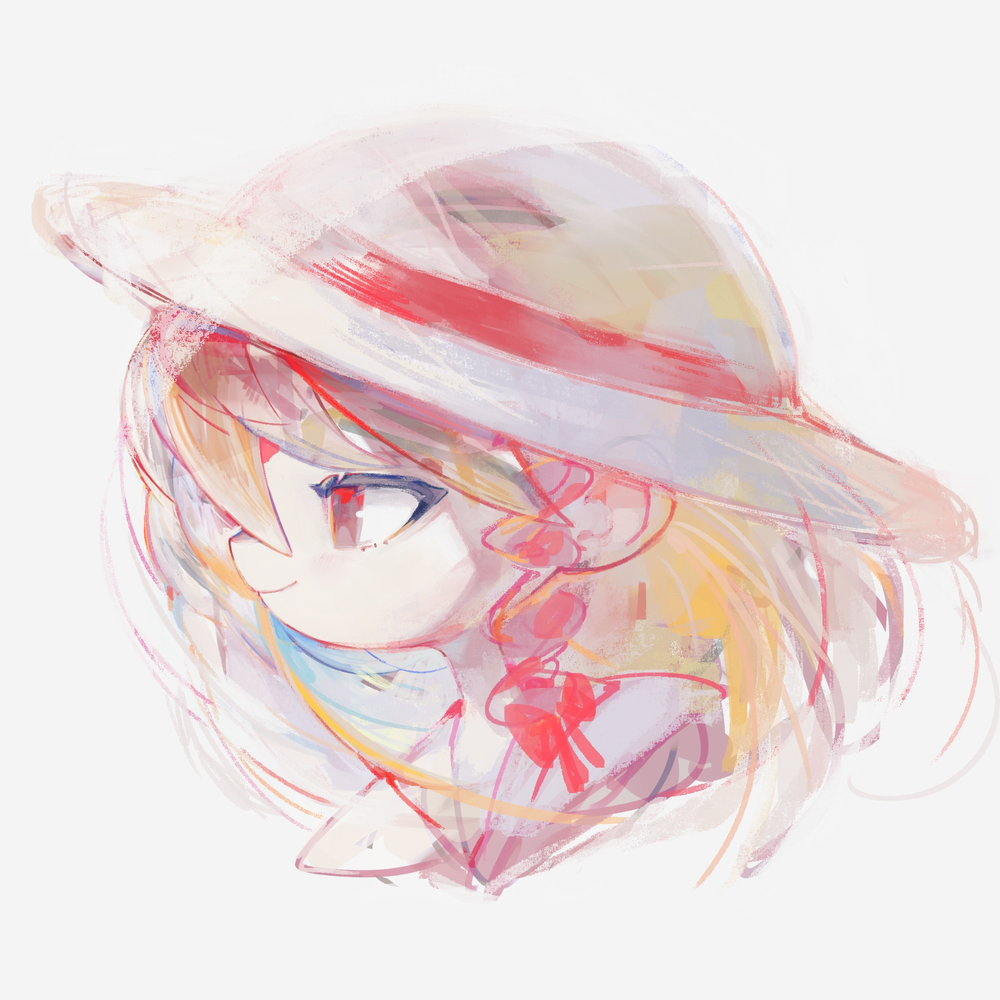
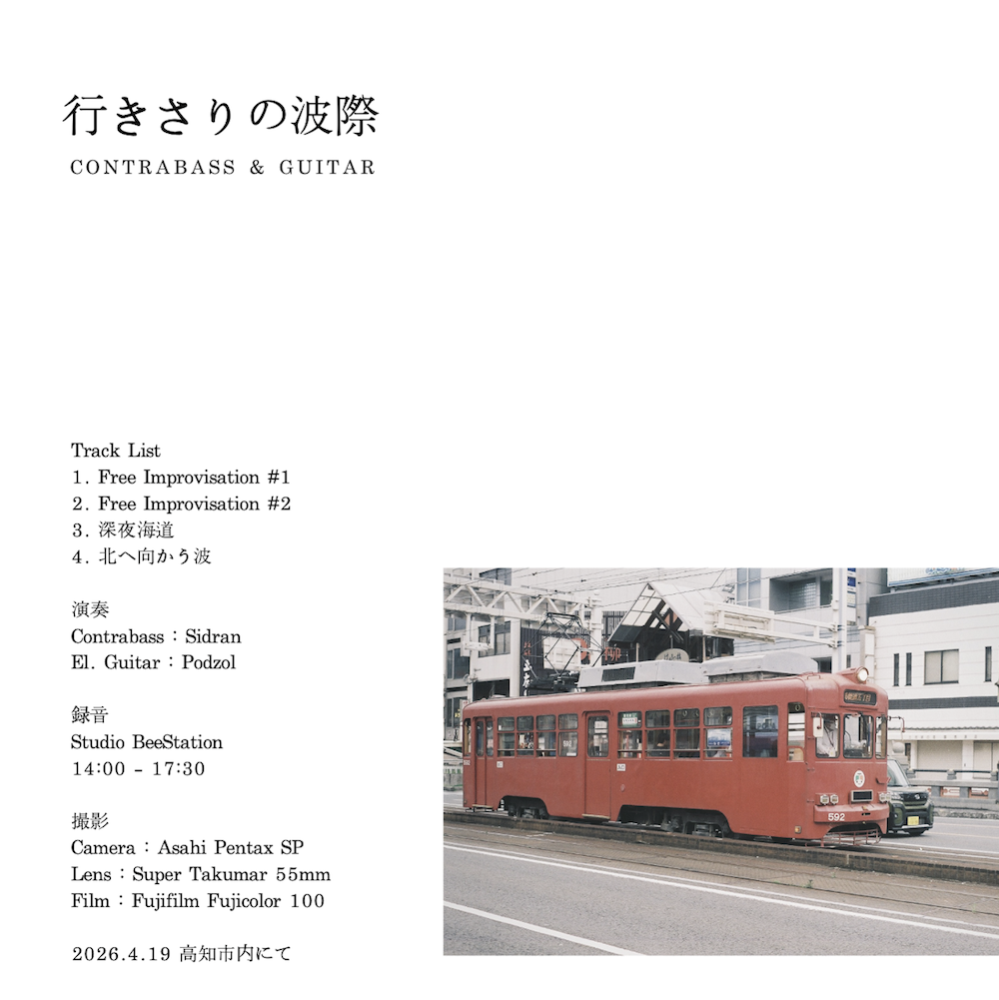
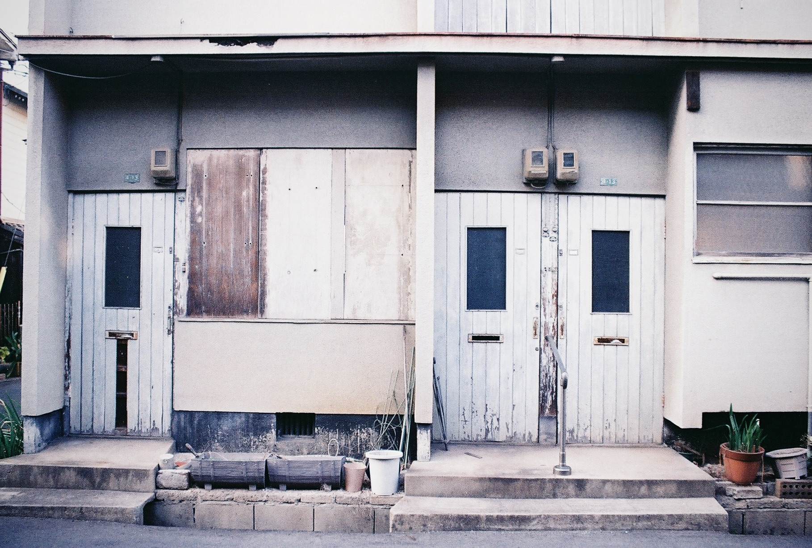
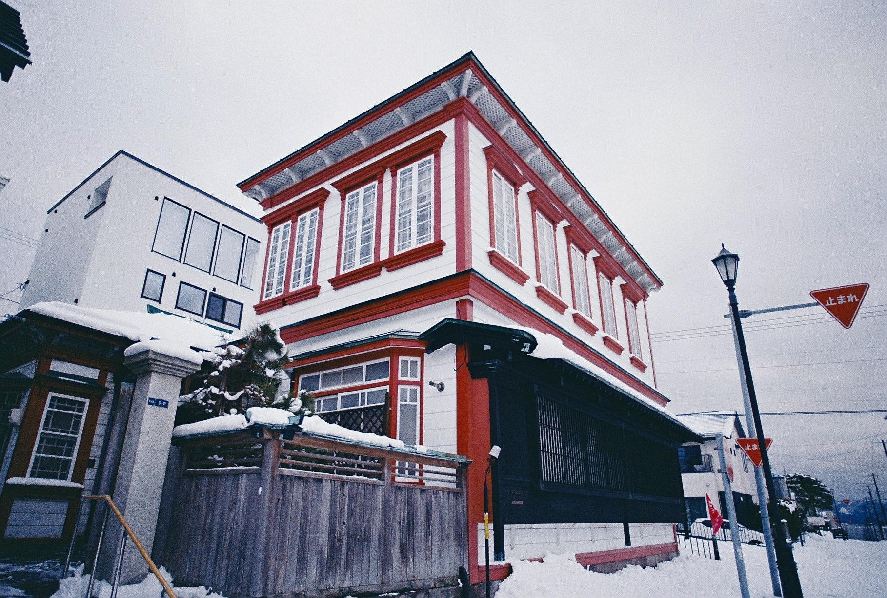

Works (The Nudja Conspiracy)


街は動き出している
2025.4
2025.4

空へ
2024.10
2024.10

Filament
2023.4
2023.4

YUZE
2022.10
2022.10


▲画像をクリックすると専用ページに飛びます




▶︎音楽アルバム
▶︎街並み写真
幼少期よりクラシックギターを習う。高校時代にジャズに
出会い、大学進学をきっかけに移り住んだ北海道にて作曲
理論を学ぶ。 趣味は街並み写真の撮影。広島県呉市在住。
-------------------------------------------------------------------
参加サークル:
音楽) The Nudja Conspiracy
写真) 港燈社
-------------------------------------------------------------------
▶︎X(Twitter)
▶︎YouTube
▶︎Booth
▶︎Bandcamp
2026.04.26 ...M3-2026春に参加します。
2026.03.27 ...オリジナル曲「フィルムパトローネ feat.花隈千冬」を投稿しました。
2026.02.22 ...東京コミティア155に参加しました。
2025.10.26 ...M3-2025秋に参加しました。
2025.04.27 ...M3-2025春に参加しました。
2025.01.26 ...The Nudja Conspiracy の公式Twitterを開設しました。
今後の予定 〜調整中〜
▶︎GRADIERWERK
▶︎LICJAR.XYZ
▶︎Jüw's Page
▶︎DISTRICT 11
▶︎night watch
ご依頼・ご相談 Email: nudjataro (a) gmail.com

